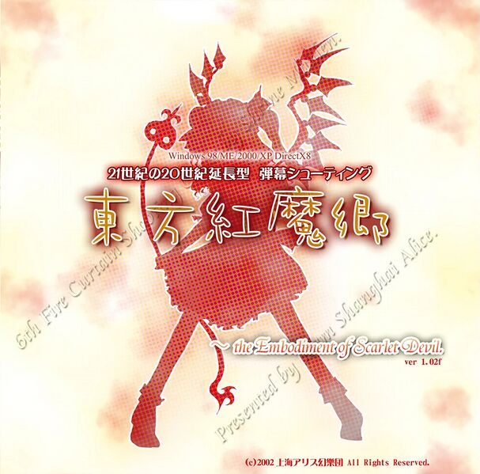
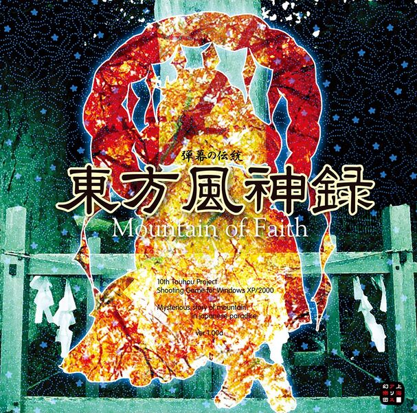
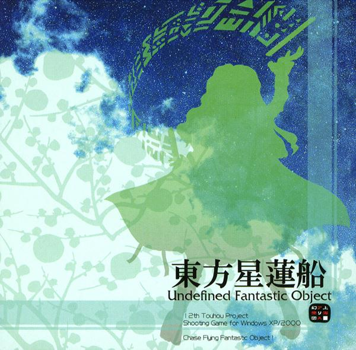
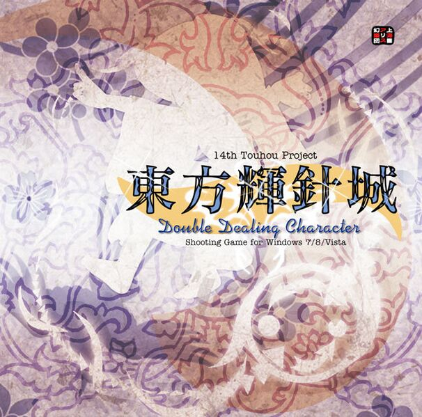

注意，此頁面不包含舊五作
正數遊戲是指由ZUN親自製作或主持製作且擁有"TH"編號的作品
小數點遊戲則是外傳
(TH即為Touhou Project縮寫)。
舊五作：東方靈異傳、東方封魔錄、東方夢時空、東方幻想鄉、東方怪綺談
【第06.0作】東方紅魔鄉～ the Embodiment of Scarlet Devil.
(2002年08月11日)

東方紅魔鄉～緋紅惡魔的體現（東方紅魔郷～ the Embodiment of Scarlet Devil.，とうほうこうまきょう，Touhou Koumakyou）
是由上海愛麗絲幻樂團所製作的縱向捲軸彈幕射擊遊戲，東方Project系列的第六作，同時也是該系列第一個發布在Windows平台上的作品。
東方紅魔鄉一共提供了4個難度+Extra關卡可以選擇，從本作開始，ZUN在每一作整數作都會給難易度寫一段簡短的描述，而且內容也很切合該作的主題，算是東方系列的一個小特色
Easy - 面向射擊遊戲苦手的難度
Normal - 面向普通人的難度。
Hard - 專業的射擊遊戲的難度。
Lunatic - 達人向的難度。
Extra - 放棄吧，你瘋了嗎？
紅魔鄉故事
東之國的深山中，幻想鄉
此時，正值炎熱的夏季，幻想鄉內到處都是夏天的氣息
本應如此……
實際上，卻是一大片紅色的霧毫無徵兆地把幻想鄉覆蓋了
覆蓋著幻想鄉的謎之紅霧
遮擋了陽光，屏蔽了暑氣，讓幻想鄉變得又冷又暗
「這樣下去，可不行呢……」
【第07.0作】東方妖妖夢～ Perfect Cherry Blossom.
(2003年8月17日)
少女彈幕奇譚：東方妖妖夢～ 完美的櫻花盛開（少女弾幕奇譚：東方妖々夢～ Perfect Cherry Blossom.とうほうようようむ，
Touhou Yoyomu）
是由上海愛麗絲幻樂團所製作的縱向捲軸彈幕射擊遊戲，東方Project系列的第七作，Windows平台上的第二作。
本作故事承接了前作東方紅魔鄉的故事，新增加了前作第五關的BOSS：十六夜咲夜作為第三位可供選擇的角色，
三位自機均有兩種火力模式可以選擇。角色和火力模式的差異亦會影響觸發哪個Ending。從本作開始，所有的難度下均可以
完整的完成故事模式全6關的挑戰。即使在Easy難度之下，只要不續關通關，同樣可以觸發Good Ending。本作中，無論選擇了
何種難度，不續關通關之後均可開啟Extra關卡。若以其中一位角色完成Extra關卡並且達成一定條件，則可以追加開放Phantas
m關卡。同時，從本作開始，每一作的整數作遊戲，均配合故事背景加入了該作的特色遊戲系統。
Easy：入門- 面向射擊遊戲苦手
Normal：普通- 面向對射擊遊戲感覺一般的人
Hard：難關- 面向在街機上玩射擊遊戲的人
Lunatic：驚異- 奇特的方向
Extra：流風- 無法繼續前進的道路
Phantasm：幻想- 並非完全混沌之混沌
妖妖夢故事
轉眼間，溫暖的季節已經過去，幻想鄉也進入了冬季
如同過往的冬季一樣，幻想鄉內也是一片素裹銀裝
可是，今年的冬季，似乎特別的漫長
本來應該是春回大地，櫻花開放的時節
此刻卻仍然是一片銀白，恍如粉妝玉砌一般
究竟為何，幻想鄉的春天遲遲未肯來臨？
【第08.0作】東方永夜抄～Imperishable Night
(2004年08月15日)

人妖彈幕幻夜：東方永夜抄～ 不朽之夜（人妖弾幕幻夜：東方永夜抄～ Imperishable Night.，とうほうえいやしょう，Touhou Eiyashou）
是由上海愛麗絲幻樂團所製作的縱向捲軸彈幕射擊遊戲，東方Project系列的第八作，Windows平台上的第三作。
在本作中，首次出現了人類和妖怪組隊的自機。可以選擇的自機一共有4組，分別是由博麗靈夢（人類）和八雲紫
（妖妖夢Ph關BOSS，妖怪）組成的「幻想結界組」、由霧雨魔理沙（人類）和愛麗絲·瑪格特羅伊德（妖妖夢三面BOSS，
魔法使）組成的「禁咒詠唱組」、由十六夜咲夜（人類）和蕾米莉亞·斯卡雷特（紅魔鄉六面BOSS，吸血鬼）組成的「夢幻
紅魔組」以及由魂魄妖夢（妖妖夢五面BOSS，半人半靈）和西行寺幽幽子（妖妖夢六面BOSS，亡靈）組成「幽冥住人組」。滿足
一定條件之後，還可以選擇其中一位人類或妖怪單獨進行遊戲。另外，因為可選角色的增加和組隊出擊的原因，角色火力配置的選擇被取消
。本作和前作一樣，即使在Easy難度下，不續關通關也可以出現Good Ending和開啟Extra關卡。
Easy：初月- 面向射擊遊戲苦手
Normal：三日月- 面向對射擊遊戲感覺一般的人
Hard：上弦月- 面向在街機上玩射擊遊戲的人
Lunatic：待宵- 誰都不適合
Extra：望月- 月亮使人發狂
永夜抄故事
這本來應該是一個平靜安寧的夜晚。
時值幻想鄉的滿月之夜，月亮和平常看起來沒有什麼不同。
可是，看似完整的滿月，卻似乎不是真實的。
對於人類來說，月亮是不是真實的，沒有什麼太大的影響。
可是對於依賴滿月的力量的妖怪們來說，沒有滿月，就意味失去力量，這可是攸關生死的問題。
「這是異變」，幻想鄉的妖怪們如此判定著，紛紛找上了人類作為自己的搭檔出發調查。
為了解決異變和取回滿月，人類和妖怪聯手將夜晚——停止了。
於是，這個晚上，就成為了——永夜。
【第09.0作】東方花映塚～Phantasmagoria of Flower View
(2005年08月14日)

彈幕開花宣言：東方花映塚～ 繁花之幻景（弾幕開花宣言：東方花映塚～ Phantasmagoria of Flower View，とうほうかえいづか，Touhou Kaeizuka）
是由上海愛麗絲幻樂團所製作的縱向捲軸彈幕射擊遊戲，東方Project系列的第九作，同時也是該系列第四個發布在Windows平台上的作品。本作是東方系列的第二款對戰型彈幕射擊遊戲。
本作採用了東方系列第三作《東方夢時空》所使用的對戰射擊遊戲系統(連靈夢和魔理沙的EX攻擊也是沿用夢時空的)，
與Windows作品中的前作差別很大。此作中的十四位角色都有劇情模式，而且在對戰模式中還可選擇兩位額外角色進
行對戰。本作劇情以不同季節的花都在同一季節內盛放一事開始。(首次結局CG由黃昏邊境的繪師Alphes繪製)
Easy：達摩草- 攻擊最為稀少，平穩的難度。
Normal：福壽草- 標準的難度。
Hard：山茶花- 以某種程度的猛烈攻擊開始。
Lunatic：彼岸花- 另一個世界的難度。
花映塚故事
暖雨晴風初破凍，此時正是幻想鄉春回大地的時候
百花爭艷，千華繚亂
到處均化作了花之海洋
但此美景絕非尋常
乃是所有花兒一同綻放而成
不論四季、無分時節
這片不合時令的花海，其真面目到底為何物？
【第10.0作】東方風神錄～Mountain of Faith
(2007年08月18日)

彈幕的傳統：東方風神錄～ 信仰之山（弾幕の伝統：東方風神録～ Mountain of Faith.，とうほうふうじんろく，Touhou Fuujinroku）
是由上海愛麗絲幻樂團所製作的縱向捲軸彈幕射擊遊戲，東方Project系列的第十作，Windows平台上的第五個整數作。本作開發的主要概念是「回歸原點」
，整體系統比先前的作品變得簡單化。同時，自本作起開始使用新的遊戲框架，遊戲畫面也做了重大突破，變得更為立體及細膩精緻。
此遊戲開始使用新的程式框架，取消了前幾作中擦彈系統、人妖系統，回歸於當初只有兩位主角的操作，並導入了取代傳統符卡的「靈擊系統」和影響得點道具分數的
「信仰點數系統」且將個人攻擊選擇增加為三種。傳統的擦彈系統也變得虛位化，被改為有特效而無分數，玩家
不再像以往可藉由擦彈提昇分數。作者ZUN表示希望藉此提升遊戲進行速度，避免為擦彈而故意拖關。此遊戲包含六關卡追加Extra關卡。本作劇情以博麗靈夢以被要求關閉博麗神社作開始。
Easy：用於熟悉操作的難度。- 再求精進是為人的基本。
Normal：用於享受遊戲的難度。- 幸福源自於對自己充滿信心。
Hard：相當值得驕傲的難度。- 沒有表演的閒暇了吧。
Lunatic：一直以來的難度。- 不懂意思的話請不要嘗試。
Extra：哦呀？想玩玩嗎？- 你也相當好事呢。
風神錄故事
位於幻想鄉東側境內的博麗神社，
一直都因為妖怪們的存在而熱鬧不已。
可是神社的巫女——博麗靈夢卻正為別的事而煩惱：
最近出現了一個奇怪的人類，命令靈夢將神社轉讓給妖怪山上的神明。
是否應該為了收集更多的信仰而接受她們的要求呢？
可是另一方面，神社也擔負著維護大結界的重任。
該如何選擇呢？
【第11.0作】東方地靈殿～Subterranean Animism
(2008年08月16日)

受詛咒的禁忌彈幕：東方地靈殿 ～ 地底的自然信仰（忌み嫌われた弾幕：東方地霊殿 〜 Subterranean Animism.，とうほうちれいでん，Touhou Chireiden
是由上海愛麗絲幻樂團所製作的縱向捲軸彈幕射擊遊戲，東方Project系列的第十一作，Windows平台上的第六個整數作。
本作系統基本延續了《東方風神錄》。
此遊戲導入了「通訊系統」，
可藉由復出的擦彈系統及其他方式提昇通訊值，進而影響得點道具的分數。但不再計入擦彈積分中。
操縱角色仍為傳統的兩位主角，但各自可選擇三位妖怪作為搭檔。本作劇情以地底下的妖怪和地靈來到地上作開始。
Easy：妖精級 - 犯困的時候玩這個難度會馬上睡著的。以不被當成笨蛋為目標加把勁吧。
Normal：河童級 - 對人類來說平易近人的難度。但行事猶豫會被「那個」帶走喲。
Hard：天狗級 - 讓人拿出真本事的難度。有必要好好研究一下其中的規律。
Lunatic：鬼神級 - 逗你玩的難度。一邊喝酒一邊玩好了。
Extra：偶像級 - 特別的難易度。隨你玩不玩。
地靈殿故事
冬天的博麗神社。
某日，神社附近突然冒出了沖天的白色間歇泉。
巫女博麗靈夢感到十分驚喜。
她相信這會為神社帶來更多的參拜客。
即使是同間歇泉一起出現的地底怨靈也沒能讓她煩惱太久。
……
然而另一方面，與人類的欣喜不同，地上的妖怪們感到憂心忡忡。
從地底出現的怨靈是妖怪們不願見到的。
魔法使帕秋莉·諾蕾姬找到了古老的妖怪賢者八雲紫一同商量現狀。
於是，
受到了妖怪們委託的博麗靈夢和霧雨魔理沙，前往了受人厭惡的地底世界。
【第12.0作】東方星蓮船～Undefined Fantastic Object
(2009年08月16日)

東方星蓮船～ 幻想的彈幕物體（東方星蓮船～ Undefined Fantastic Object.，とうほうせいれんせん，Touhou Seirensen）
是由上海愛麗絲幻樂團所製作的縱向捲軸彈幕射擊遊戲，東方Project系列的第十二個整數作，Windows平台第七個整數作。
此遊戲取消了《風神錄》及《地靈殿》所採用的靈擊系統，仍然使用前幾作的符卡攻擊。並採用新的寶船系統，可利用於畫面上飛行的小幽浮進行採集，集滿三個便會出現大幽浮。
其中分為紅x3的自機點船、藍x3的分數點船、綠x3的靈擊點船及紅藍綠的隨機船。可幫助玩家收集道具及清理彈幕。本作劇情以關於奇怪飛行船的傳聞作開始。
Easy：面向星期日的Shooter - 致近日繁忙的人
Normal：面向現役Gamer - 致按自己喜好選擇遊戲的人
Hard：面向幻想鄉的居民- 致無法適應這個社會的人
Lunatic：面向失落的民族- 致堅稱自己是被選中者的人
Extra：面對妖怪退治專家- 致遇到妖怪也絕不畏懼的人
星蓮船故事
冰雪消融，萬物復甦。
博麗神社的巫女靈夢聽說了一個傳聞：
雲中有一艘船在飛行。
魔法使魔理沙認為那是七福神的寶船。
然而兩人都各懷心思，又對此事有所懷疑。
直到山上的風祝早苗來到了神社。
這時兩人才看到巨大的黑影正消失在雲中……
【第13.0作】東方神靈廟～Ten Desires
(2011年08月13日)

東方神靈廟 ～ 十欲（東方神霊廟 ～ Ten Desires.，とうほうしんれいびょう，Touhou Shinreibyou）
是由上海愛麗絲幻樂團所製作的縱向捲軸彈幕射擊遊戲，東方Project系列的第十三個整數作。
本作劇情以突然湧現的神秘靈體作開始。導入了新的「靈界系統」（trance mode，霊界トランス），玩家被彈或者收集足夠神靈就可以發動「靈界Trance」
(因為被彈而發動的「靈界Trance」完畢後依然會損失一個自機，收集足夠神靈手動發動的話則不會損失自機)。不同角色擁有不同效果。本作首次出現了會回復體力的頭目。
此遊戲於2011年2月28日開始製作，但遊戲公布卻因2011年日本東北地方太平洋近海地震而被ZUN押後。因此延至4月15日才公布。另外本作重新啟用《永夜抄》的符卡練習模式。
Easy：健康長壽祈願- 比較不容易死。適合想長壽的人
Normal：交通安全祈禱- 來尋找安全的道路吧。祝一路順風
Hard：生意興隆祈願- 還記得手頭上的技術的話，就能夠賺到吧
Lunatic：IT資訊安全祈願- 即使仰靠神明也沒用的。別玩了
Extra：彈幕退散祈願- 啊—願你順利避開彈幕。砰砰
神靈廟故事
櫻花紛飛的美麗幻想鄉中。
本該人人都沉浸在春意里。
然而靈夢與魔理沙卻無心賞花。
因為到處都是正體不明的神靈。
而在妖怪山的早苗，
與身居冥界的妖夢，
也注意到異變的發生。
【第14.0作】東方輝針城～Double Dealing Character
(2013年08月12日)

不可思議與令人不安的異變：東方輝針城～ 欺詐的角色（不可思議で不穏な異変：東方輝針城～ Double Dealing Character.，とうほうきしんじょう，
Touhou KishinJou）是由上海愛麗絲幻樂團所製作的縱向捲軸彈幕射擊遊戲，東方Project系列的第十四作。本作中十六夜咲夜再次升格成為可選自機。
從本作開始，東方Project系列彈幕射擊遊戲不再支持Windows XP；不過在之後放出的1.00b補丁中，再次增加了對XP系統的支持。
2014年8月13日，ZUN正式在PLAYISM上進行東方Project系列遊戲作品的網絡販售。本作即為系列中第一作在網絡上販售的遊戲作品。
2019年6月19日登陸steam。
本作延續了神靈廟的系統設定，保留了符卡練習模式。在本作中，玩家可以透過大量回收丟落道具可以獲得更多的積分和殘機或BOMB碎片。
作劇情以主角的武器妖怪化和村莊的妖怪動亂為開端，其中還涉及了一寸法師的故事背景。
輝針城故事
熱鬧祭典過後的幻想鄉，似乎恢復了往日的安寧和平靜
不過，更大的風暴正在醞釀之中……
靈夢、魔理沙、咲夜，她們手中的武器突然變得變得活躍起來，似乎擁有了自己的意志
與此同時，各處的弱小妖怪都紛紛開始暴動起來
幻想鄉頓時陷入了危機之中
靈夢她們，在迷茫之中踏上調查異變的道路
逐漸地，令人不安的陰雲開始籠罩天空。
巨大的建築在強風中軋軋作響。
幻想鄉中響徹著不協和音。
【第15.0作】彈幕天邪鬼～ Impossible Spell Card.
(2015年08月14日)

狂氣的彈幕遺產：東方紺珠傳～ 瘋狂王國的遺產（狂気の弾幕遺産：東方紺珠伝 ～ Legacy of Lunatic Kingdom.，とうほうかんじゅでん，Touhou Kanjuden）
是由上海愛麗絲幻樂團所製作的縱向捲軸彈幕射擊遊戲，東方Project系列的第十五作。
2015年4月22日，ZUN在其博客「博麗幻想書譜」上發布了關於東方Project系列第15作——《東方紺珠傳》的消息。體驗版於例大祭12中發布，預計將於夏天完成製作。
2019年4月2日登陸steam。
本作引入了「完美無缺」模式(也可選傳統模式)。該模式中，遊戲進度會被自動保存，一旦玩家Miss(中彈)，遊戲就會立即結束，
不過玩家可以選擇從上一次自動保存的位置繼續遊戲。本作劇情延續《東方深秘錄》的伏筆，講述月之都透過《東方深秘錄》的都市傳說具現化，試圖將幻想鄉變成月之都，主角們在鈴仙的帶領下試圖解決此次異變。
輝針城故事
正當都市傳說的騷動剛落下帷幕…
幻想鄉卻陷入了毀滅的危機…
妖怪看不見的奇異機械，正在將幻想鄉一點點淨化。
機械所過之處，樹木枯萎，寸草不生。
在都市傳說騷動中出現的七顆靈異珠之一的月都之珠，似乎與這有莫大的關係…
永琳和輝夜，似乎對這個狀況早有預料。
受其委託的人類們和永琳的弟子鈴仙，在永琳的幫助之下展開調查。
遭遇了月之使者的她們，決定前往月都一探究竟。
在那被狂氣圍繞的月之王國，到底發生了什麼事情？
【第16.0作】東方天空璋～ 四季之中的隱星
(2017年05月07日)

東方天空璋～ 四季之中的隱星（東方天空璋～ Hidden Star in Four Seasons.，とうほうてんくうしょう，Touhou Tenkuushou）
是由上海愛麗絲幻樂團所製作的縱向捲軸彈幕射擊遊戲，東方Project系列的第十六個整數作。
2017年4月20日，ZUN在其博客「博麗幻想書譜」上公布東方Project的新整數作《東方天空璋》的相關消息，預計於第十四回博麗神社例大祭上公布體驗版，正式版則將於Comiket 92上發表。
5月5日，ZUN在博客上公布了體驗版的碟面。8月11日在C92上正式發表。
2017年11月18 日於steam平台上發行，這也是本遊戲系列首次登陸steam。東方廚狂喜
按照博客上的說法，與前作相比，該作會相對輕鬆愉快。即所謂回歸初心，簡單爽快的傳統射擊遊戲。
天空璋故事
少女尋找中...
軼事
1.本作逆向爆菊彈幕特別多，被戲稱為東方脫褲子，然後被爆菊。而且雖然其他作品（例如輝針城）里也有背後彈幕，但只有本作在EX關中所有自機均配有背後射擊的土用季節支援
（地靈殿魔理沙帕秋莉支援以及星蓮船魔理沙B配置有背後射擊配置），之前ZUN表示本作彈幕將會回歸初心，難道神主想強調這作的核心玩法是躲背後彈幕被爆菊？
2.本作所有音樂的曲名中共有13個假名「の」（no），是迄今為止東方Project系列作品中曲名含有「no」最多的一作。
3.本作是目前新作整數作中人氣最低的，被部分玩家批評彈幕缺乏新意，部分彈幕過於瞎眼這個問題在下一整數作《鬼形獸》中也有出現，以及五面符卡練習模式的bug遲遲不修等。
另外本作角色的人氣也是慘不忍睹，除了穩居前50名內的摩多羅隱岐奈外，其餘6名角色的人氣排名都分別在日本第15回及中國第7回人氣投票中斷崖式大跳水，目前除了隱岐奈和阿吽外其他角色的名次都落在百開外。
其中矢田寺成美
最為悽慘，初登場時受到許多玩家喜愛，還出現了我永遠喜歡矢田寺成美的梗，但之後人氣逐年跳水，目前排名甚至不如1面的拉爾瓦。最速過氣傳說
也許是受到作品人氣拖累的影響，本作音樂的人氣也不怎麼突出，第⑨回中國人氣投票中甚至沒有一首進入前50名。
【第17.0作】東方鬼形獸～ Wily Beast and Weakest Creature.
(2019年08月12日)
東方鬼形獸～ 狡猾的野獸和最弱的生物（東方鬼形獣～ Wily Beast and Weakest Creature.，とうほうきけいじゅう，Touhou Kikeijuu）
是由上海愛麗絲幻樂團所製作的縱向捲軸彈幕射擊遊戲，東方Project系列的第十七個整數作。
2019年4月17日，ZUN在其博客「博麗幻想書譜」上公布東方Project的新整數作《東方鬼形獸》的相關消息，於2019年5月5日的第十六回博麗神社例大祭上公布體驗版，並於2019年8月12日的Comic Market 96上發布正式版。
本作自機為博麗靈夢、霧雨魔理沙和魂魄妖夢。動物靈有野狼靈、水獺靈、大鷲靈。互相搭配，共有九條故事線。
鬼形獸故事
少女尋找中...
【第18.0作】東方虹龍洞〜Unconnected Marketeers.
(2021年05月03日)
東方虹龍洞 ～ 不聯的市場商（東方虹龍洞 〜 Unconnected Marketeers）
是由上海愛麗絲幻樂團所製作的縱向捲軸彈幕射擊遊戲，東方Project系列的第十八作，同時也是該系列第十三個發布在Windows平台上的作品。
本作取消了擦彈系統，擦彈仍有聲音和畫面效果，但是不會計數和增加分數
本作的特色系統。自機可以攜帶不同的卡牌來增強自己的能力：
包括以下幾種類型
使用類：可以主動使用的卡牌。按Item鍵（默認C）發動效果，按Change鍵（默認D）在持有的多個使用類卡牌之間切換。使用一次後需要冷卻一段時間才能繼續使用。
裝備類：為自機附加各種戰鬥功能的卡牌，一般是某種子機。各子機的紙面傷害輸出請參考虹龍洞機體說明頁面。
能力類：給自機附加永續效果的卡牌。
即時類：獲得後立刻生效的卡牌。
虹龍洞故事
街頭巷尾流通著不可思議的卡，卡中包含了眾多人妖機密。
擁有這些卡牌，就能使用對應人物的能力。
卡牌怎麼出現的、是誰製作的、如何製作的……全無頭緒。
因此，巫女團結夥伴，前去調查。
【第19.0作】東方獸王園〜Unfinished Dream of All Living Ghost.
(2023年08月13日)
東方獸王園～ 所有生靈的未竟之夢（東方獣王園 〜 Unfinished Dream of All Living Ghost.）
是由上海愛麗絲幻樂團所製作的縱向捲軸彈幕射擊遊戲，東方Project系列的第十九作，同時也是該系列第十五個發布在Windows平台上的作品。
本作是東方系列的第三部對戰型彈幕射擊遊戲且該作是東方正作有史以來登場角色與自機數量最多的一作。
本作延續了《東方虹龍洞》與《彈幕狂們的黑市》的卡牌系統，並在前作已有的卡牌上又雙增加了新的卡牌。通過裝備卡牌，自機會獲得對應的能力與增益效果。
劇情模式中，每擊敗一位敵機角色，便可隨機獲得該角色對應的兩種能力卡中的一張；而在對戰模式中，雙方均可從全部能力卡中選擇一張攜帶。
獣王園故事
受集市的影響，古老土地的所有權回歸虛無。
失去所有者的土地，最終將化作不毛之地吧。
不過，不用擔心。自然和靈將附身在土地上，使其回歸往常的那副無趣模樣。
如果沒有那些貪婪的獸的話…… ——來自東方四方山新聞的故事介紹